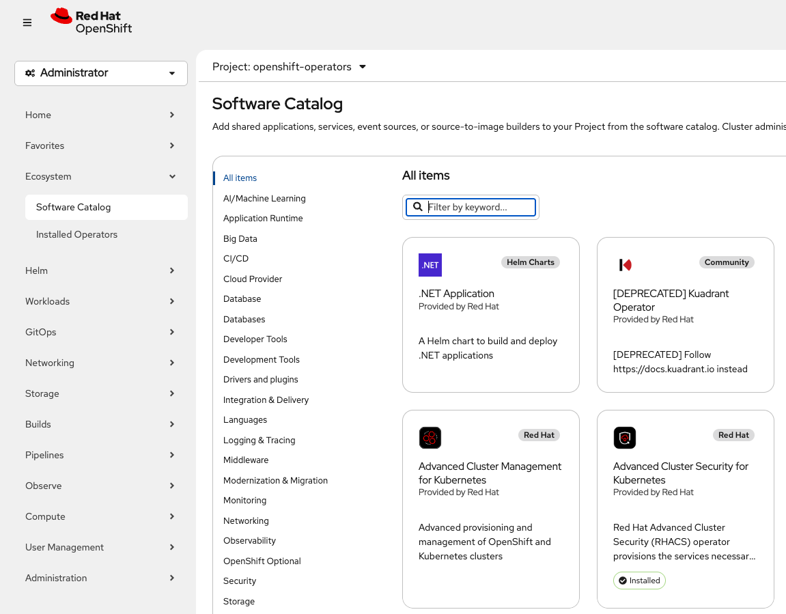
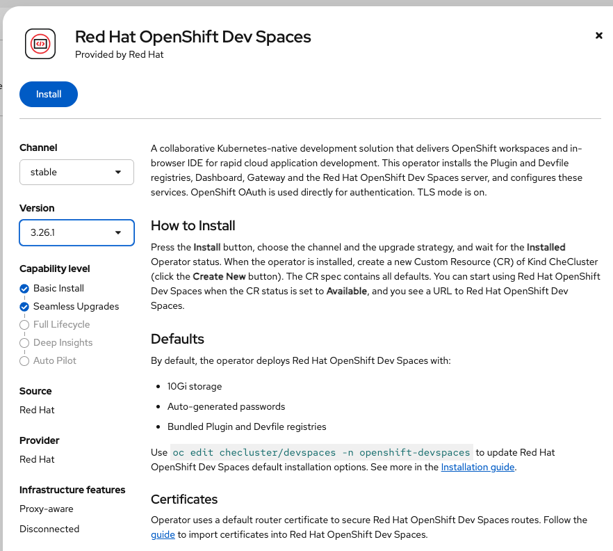
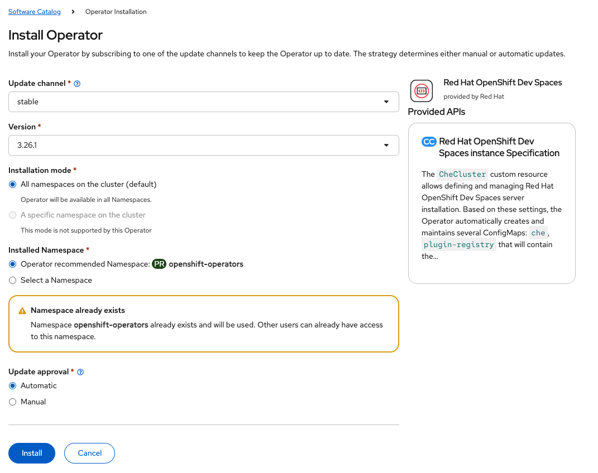
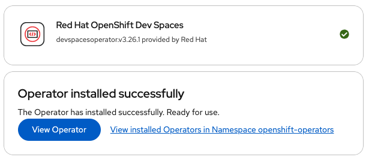
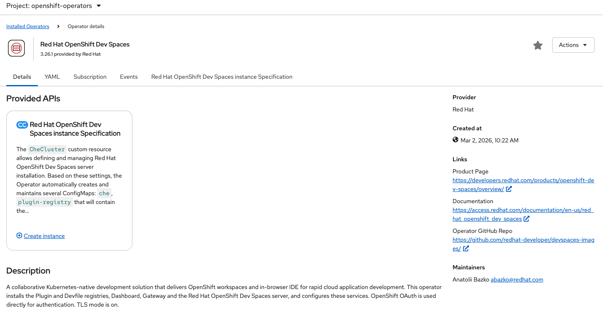
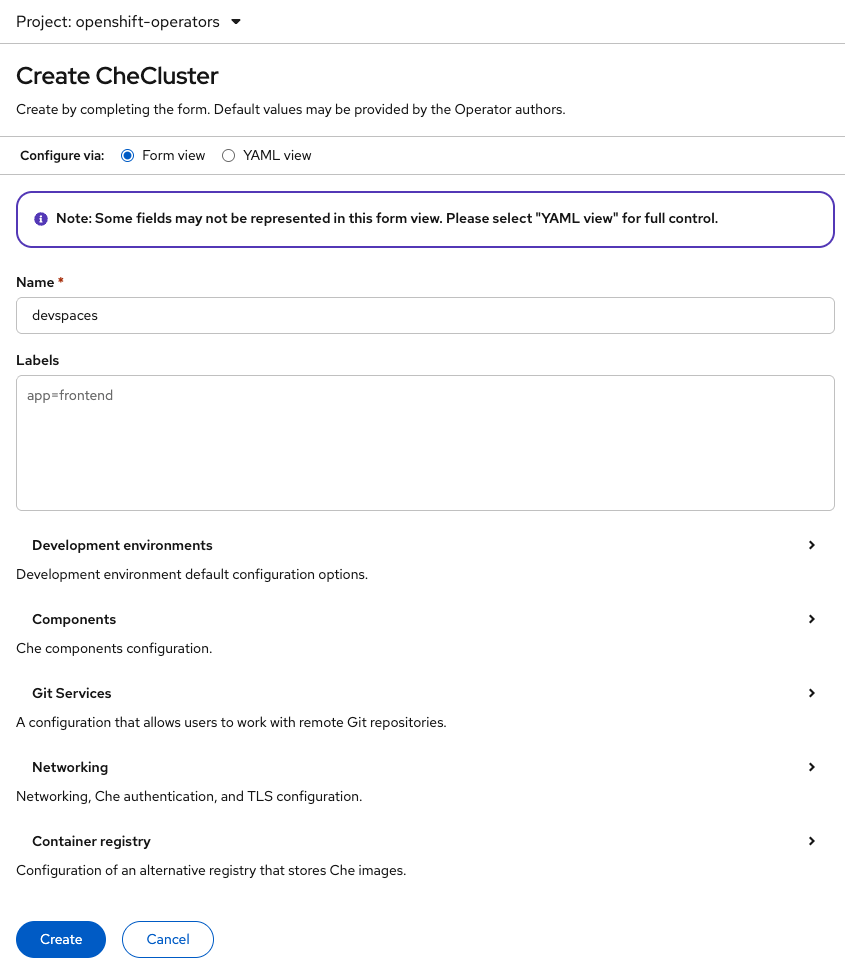

Dev Spaces Operators
To install Dev Spaces a single operator is installed from the ecosystem catalog. This is an administrative function that only a subset of people in the organisation will have the permission to do. Additionally, the installation of operators onto clusters is generally an automated process performed by Red Hat Advanced Cluster Management policies, ArgoCD infrastructure automation or similar automation solutions. For the purposes of the workshop you will install the operator by hand from the ecosystem catalog.
Software ecosystem catalog
As a user with appropriate permission on the cluster select the 'Administrator' perspective and then select the 'Software Catalog' sub menu of the 'Ecosystem' menu as shown below.

In the filter field enter the text below and press return.
DevSpacesOperator installation
The OpenShift Dev Spaces operator tile will be displayed, which should then be selected. The Dev Spaces installation screen is displayed as shown below. There are two options displayed on the screen :
-
Channel - Should be left at stable, unless there is a requirement on a test cluster to ever install a candidate version to investigate a new capability.
-
Version - Again, this should be left as the latest version available unless there is a reason to restrict this to a slightly older version as guided by the Red Hat team.
The text of the operator installation screen shows useful information and links regarding the creation of a Dev Spaces instance and the option to install customer certificates for access to the routes managed by Dev Spaces.
Leave the channel set to 'stable' and the Version as the latest version and click the blue 'Install' button.

On the next screen there is a second opportunity to edit the update channel and the version to be installed as shown below. Additionally, the installation mode is displayed (but cannot be changed) and the installation namespace is displayed. The operator recommends that it is installed in the openshift-operators namespace, and since this will already exist there will be a warning to that effect. This warning can be ignored.
Finally, the update strategy for the operator can be selected to be either automatic (default) or manual.
leave all settings at the default and press the install button.

The operator installation will then take place, which may take a minute or two to complete. When it has completed the screen will show that it has installed correctly. Click the blue button to 'View operator' as shown below.

The screen will then show the details of the installed operator as displayed below.

Creation of the Che cluster
On the sub menu, currently with 'Details' highlighted above select the 'Red Hat OpenShift Dev Spaces interface Specification' menu item. This will give you the opportunity to create a 'Che Cluster'.
Click the 'Create CheCluster' blue button and then you will see a screen similar to below.

It is possible to switch the installation process between the form view and the YAML view using the radio buttons at the top of the screen. The YAML view is good if you have a pre-defined configuration for the Dev Spaces instance that you want to past over the existing YAML objects, or if you understand the options well and want to modify a small number of values. The form view is good to open up the option fields to explore the settings that are available.
Click on the 'Developer environments' view and you will see various options, some of which are highlighted below :
-
startTimoutSeconds - Maximum duration of a workspace start action. Default is 300 seconds.
-
secondsOfRunBeforeIdling - Maximum runtime for a workspace in seconds. Helpful to ensure workspaces do not run forever, once started. A value of -1 disables the timout.
Other options include the connection of the Dev Spaces instance to a number of different Git platforms for easy access to repositories.
|
Git platform integrations are possible to enable users to authenticate quickly and easily. To setup the connection will require a DevSpaces FQDN which you don’t get until the DevSpaces instance is actually created. So, the guidance here is to create the DevSpaces instance and then go back into the CheCluster configure settings to add the the Git integration as a secondary operation. |